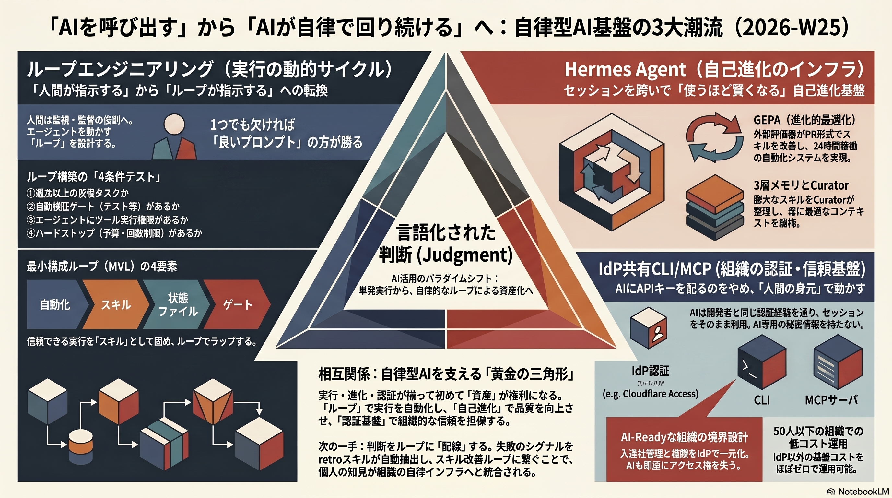

Weekly Insights: 2026-W25（2026-06-15〜06-21）
今週のホットトピック
- loop-engineering ループエンジニアリング — 人間がエージェントに指示する構造を「ループがエージェントに指示する」に転換する、2026年の開発スタイルの次層（X bookmark: 15,092）
- hermes-agent Hermes Agent — 3層メモリ・スキル自動整理・GEPA進化最適化で「使うほど賢くなる」自己進化エージェント基盤（X bookmark: 2,421）
- idp-shared-cli-mcp IdP共有CLI/MCP — APIキーを排し、AIが人間と同じIdP認証経路で社内基盤にアクセスする設計（X bookmark: 1,747）
深掘り
loop-engineering ループエンジニアリング
Boris Cherny（Claude Code責任者）が整理した「ループを書けば人間はループの外に出られる」という転換。4条件テスト（週次以上の繰り返し・自動ゲート・ツール・ハードストップ）をすべて満たす場合のみループはリターンを返し、1条件でも欠ければ良いプロンプトが勝つという厳格な条件付け。最小構成ループ（MVL）は自動化・スキル・状態ファイル・ゲートの4要素から始め、「手動→スキル化→ループ→スケジュール」の順を飛ばすと本番で壊れる。
hermes-agent Hermes Agent
Nous Researchのオープンソースエージェント基盤で、セッションをまたいで賢くならない従来エージェントの三つの弱点（メモリ容量・スキル増殖・自己評価バイアス）を構造的に解決する。Curator（スキルのガベージコレクション）とGEPA（外部からの進化的最適化・PR形式で提案、直接コミットしない）が人間なしで動き続ける自己改善ループを実装している。10ハック（Kanban・Event Triggers・cron・Sub-agents等）を積み重ねると24時間稼働の自動化システムに変わる。
idp-shared-cli-mcp IdP共有CLI/MCP
APIキーを一切配らず、API自体をCloudflare Access（エッジ層）で保護しIdP認証に統一する設計。CLIとMCPサーバを同一バイナリで提供し、AIは端末利用者のcloudflaredセッションをそのまま使う——AIは「それを動かす人間の身元」で動く。入退社の反映はIdPの操作だけで完結し、50人以下ならIdP以外ほぼ無料で運用できる。
今週の中心テーマ
「AIを呼び出す」から「AIが自律で回り続ける」へ——ループ・自己進化・認証基盤の三角形が揃い始めた。

今週ingestしたページを横断すると、「AIをどう使うか」よりも「AIがいつでも・誰がいなくても・正しく動き続けるためにどう設計するか」という問いが共通して立ち現れた。ループエンジニアリングは人間をループの外に出す転換点を4条件で定義し、Hermes Agentはエージェント自身が使うほど最適化される自己進化インフラを実装し、IdP/CLI/MCP設計はAIが人間と同じ認証基盤を使えることで組織が初めて「AI-Ready」になると示す。三つはそれぞれ独立した文脈から来ているが、指している方向は同じ——AIを一回動かすことに投資するのではなく、AIが止まらず動き続ける基盤に投資する段階に来た。
先週のテーマ「言語化された判断をループに配線する（資産を作る）」の一段先——その資産を乗せる自律インフラをどう設計するか、を問う週だった。
根拠ページ
- loop-engineering（→ 今週のホットトピック#1）
- hermes-agent（→ 今週のホットトピック#2）
- idp-shared-cli-mcp（→ 今週のホットトピック#3）
- claude-mcp-affiliate-automation — Claude Skills × MCPで案件選定・記事量産・cron自動運転を設計として一本化するアフィリエイト実践ガイド（bookmark: 1,024）
- llm-model-selection-strategy — 上流に大モデル・下流に小モデルを当てる工程分解型コスト最適化。全工程に最強モデルを使うのが最弱の運用になる逆説
- google-calendar-ai-database — タイトルルール統一でGoogleカレンダーをAI業務DBに変え、MCP接続で経費精算・工数管理を自動化する起点になる
既存wikiとの接続
- self-refining-skills — Hermes AgentのGEPA最適化と直接つながる。エージェントが自作したスキルを外部評価器がオフラインで改善するという設計は、self-refining-skillsの「スキルが使われるたびに良くなる」コンセプトの工業的実装
- agentic-coding — ループエンジニアリングが成熟した先の実践形態。ループが鋭いスキルを呼び、スキルがコードを書き、コードがゲートを通るという構造の帰結がここに向かう
- ai-agent-governance — IdP設計の「AIが人間の身元で動く」をさらに進め、書き込みや不可逆操作をエージェントに許すか禁じるかを外部ポリシーで制御する構想。認証の先にある認可設計
sugeta-san への問い
自分のwikiシステムは「ループ・自己進化・認証基盤」の三角形のどこが欠けているか？
→ launchd + Claude Code で自動ingestとweekly生成が走っており「ループ」はある。しかし「自己進化」（出力品質の自動評価と改善）と「認証統一」（各スクリプトがAPIキーを個別に持つ構成）は未整備のまま。Hermes AgentのGEPAのように「外部評価者がPR形式で改善を提案する」仕組みをこのvaultに持ち込むとすれば、evolve-insightsスキルの自動化がその入口になりうる。
いますぐAIと一緒に（コピペ）
以下をそのままClaude / Claude Codeに貼って、自分のAI活用がループとして設計されているか診断してみてください:
自分が繰り返し行っているAI作業として [作業名] があります。
ループエンジニアリングの4条件テストで評価してください:
1. 週1回以上繰り返されるか？
2. 「正しく完了した」を自動ゲート（テスト・ビルド・lint等）で検証できるか？
3. エージェントがログ・コード実行・ファイル操作など必要なツールを持てるか？
4. トークン予算・最大イテレーション数・ハードストップを設定できるか？
すべてYesなら: 最小構成ループ（MVL）の4要素（自動化・スキル・状態ファイル・ゲート）の設計案を出してください。
Noがあるなら: 今はプロンプトが勝る理由と、条件を整えるために何が必要かを説明してください。
参考: wiki/concepts/loop-engineering.md
さらに読むべきページ
- harness-engineering — ループを走らせる静的な制約・フィードバック機構の設計。ループエンジニアリングの「動的な実行」に対して「静的な枠組み」を担う補完関係にある
- eval-loop — Hermesのスキル・メモリ・cron・承認ゲートを使ったAI出力品質ゲートの構築例。GEPAの「外部オフライン評価」に対して、実行時の「インライン評価」を担う
- self-refining-skills — ループが鋭いスキルを呼ぶ設計の基礎概念。Hermesの自己改善ループと接続して読むと、スキルが「作られる→評価される→最適化される」全サイクルが見えてくる